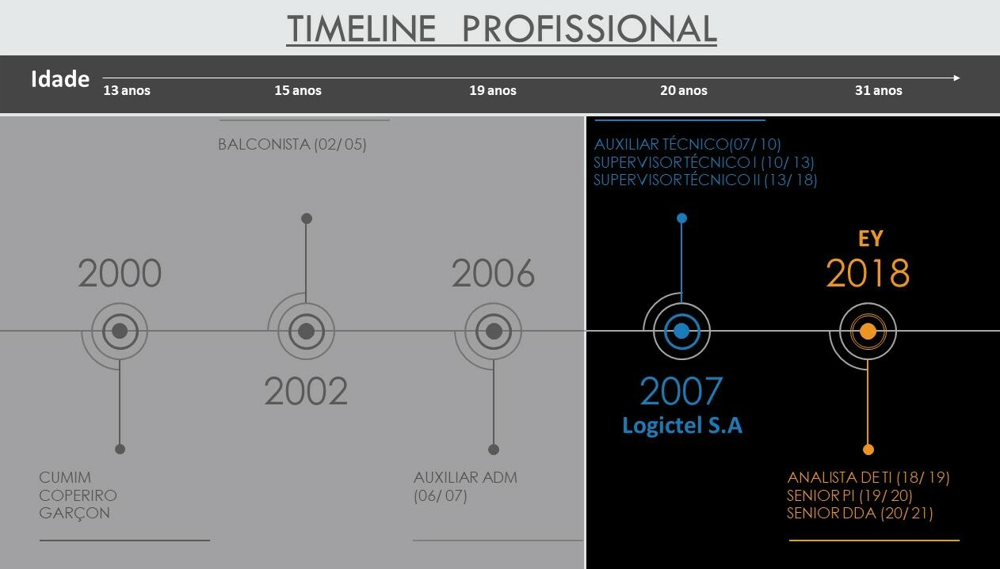

Evanil Tiengo Junior
Analista e Cientista de Dados | Engenheiro de Telecomunicação | Engenheiro Eletrônico
Primeiramente sou pai do Eduardo e marido da Morgana. Atualmente sou Consultor Senior de DDA (Digital Data and Analytics) da EY. Sou são paulino, fã de Naruto e apaixonado por filmes e series. Adoro aprender e compartilhar conhecimento téorico e/ ou prático.
Objetivo
Fornecer soluções orientadas a dados e solucionar problemas de negócios desafiadores para auxiliar a tomada de decisão do negócio
Minha história profissional
Tenho mais de 12 anos de experiência profissional em Regulamentação de Telecomunicações, Sistemas de Telecomunicações, Planejamento, Relacionamento com Clientes, Métricas e KPIs. Porém nos últimos anos tenho direcionado a minha carreira para a área de dados e tenho adquirido experiência no suporte a tomada de decisão (PO), Machine Learning, Algoritmos de otimização, RPA, Data Mining, Text Mining, modelagem, bases de dados e ferramentas de visualização de dados. Estou sempre em busca de conhecimento e vou me tornar referência na área de dados.
Timeline
Alguns projetos executados
- Atualmente atuo como sênior em um projeto de otimização de um grande player do setor de eletrônicos. Nosso objetivo é construir um modelo de otimização visando o maior alinhamento de seus produtos levando em consideração diversas areas da empresa.
- Atuei sênior em um projeto de mobilidade urbana que envolveu análise de bancos de dados, avaliação de maturidade de dados, gestão de dados, Riscos, ETL, BI, além de avaliar a situação dos dados abertos disponíveis para a população.
- Identificação de outliers/ discrepâncias em bases de dados para um grande player do agronegócio. Análise descritiva e diagnóstica.
- Atuação na migração das bases de dados de uma grande operadora de telecomunicações (sistema STEL para o sistema MOSAICO da ANATEL). Fui responsável pelo (i) gerenciamento e planejamento, (ii) levantamento das informações relevantes, (iii) Auxilio em reuniões perante a ANATEL, (iv) Responsável pelos testes e execução da migração das bases.
- Atuação em propostas que envolvem Analytics em diversos setores do mercado.
- Apoio técnico em questões de análise de dados, visualição de dados, estatistica entre outras.
Formações Acadêmicas
- Pós-graduado em Ciência de Dados e Big Data pela PUC-MG em 2020.
- Graduado em Engenharia Eletrônica e Engenharia de Telecomunicação pela PUC-MG em 2014.
Principais certificados até o momento
- Estratégias de Tomada de Decisão, LinkedIn - 2020.
- Fundamentos da Resolução de Conflitos, LinkedIn - 2020.
- Pensamento Estratégico e Critico, LinkedIn - 2020.
- Governança de Dados, DSA - 2019.
- Analytics - Data Visualization - Bronze, EY - 2019.
- Big Data Analytics com R e Microsoft Azure Machine Learning, DSA - 2018.
- Formação Cientista de Dados, Udemy - 2018.
- Bertelsmann Data Science Challenge Scholarship, Udacity - 2018.